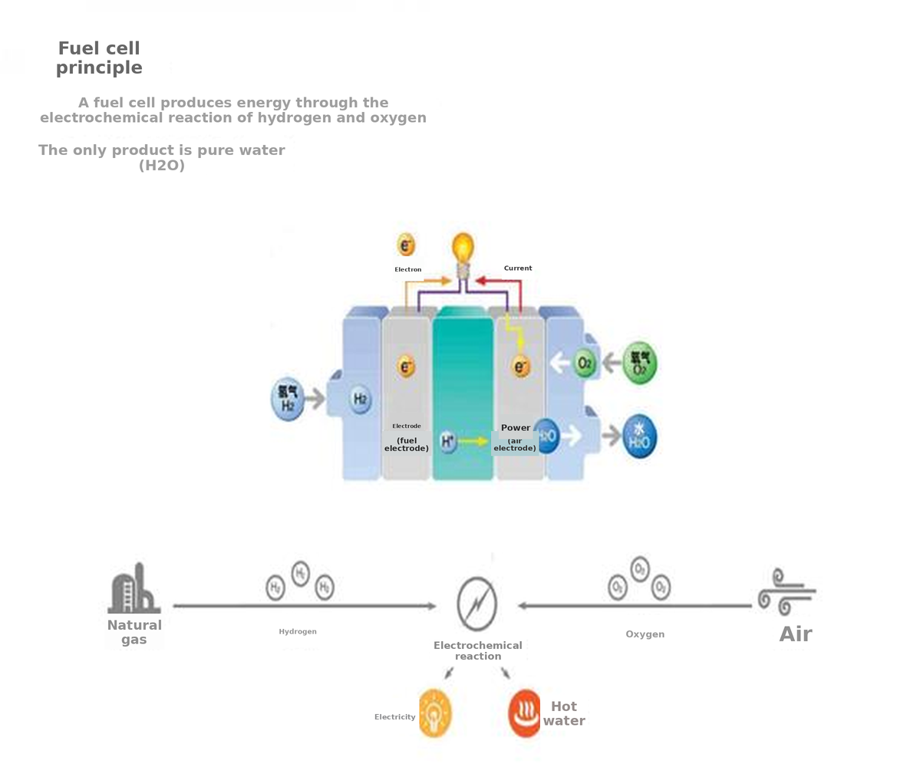
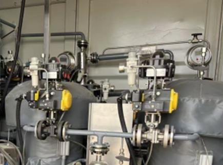

Turn biogas, coal mine gas, associated gas or city natural gas into power and hot water on site. ≥40% electrical efficiency, ≥85% overall, ≥8,000 operating hours a year.
Clean gas enters the reformer to produce hydrogen-rich syngas, then shift and PSA bring it to fuel-cell quality. Hydrogen is not bottled or stored at pressure; it is consumed inside the unit as it is made.

One reformer and fuel-cell platform; the front end changes with the gas. Gas analysis is the first step of selection — and the boundary of the warranty.
| Gas source | Typical CH₄ | Front-end treatment | Typical use |
|---|---|---|---|
| Biogas | 50–65% | H₂S to ≤20 ppm, drying, filtration; CO₂ removal if high | Livestock, food wastewater, straw, landfill, POME |
| Coal mine gas | 30–80% | Concentration or blending, fine desulphurisation, drying, pressure control | Mine extraction gas, pumping stations, gas power plants |
| Associated gas | 60–90% | Heavy hydrocarbon removal, desulphurisation, drying | Remote wells, gathering stations, vented/flared gas |
| City natural gas | 90–99% | Pressure regulation, fine desulphurisation (incl. odorant), filtration | City gates, parks, hotels, hospitals, data centres |
| Biomethane / CNG (extended) | 96–99% | Let-down, regulation, filtration | Sites without pipeline, bottled or trucked gas |
Below 30% CH₄, coal mine gas needs concentration or blending with natural gas. The exact boundary is confirmed case by case from gas analysis and flow.
Electrical efficiency ≥40% on hydrogen LHV; recoverable heat estimated at about 45% of fuel input. Multiple units parallel to several hundred kW.
| Model | Power | Fuel input | Pure CH₄ | 60% biogas | Recoverable heat |
|---|---|---|---|---|---|
| HS-CHP-100 | 100 kW | 250 kW | 25.2 Nm³/h | 41.9 Nm³/h | ≈112 kW |
| HS-CHP-120 | 120 kW | 300 kW | 30.2 Nm³/h | 50.3 Nm³/h | ≈135 kW |
| HS-CHP-150 | 150 kW | 375 kW | 37.7 Nm³/h | 62.9 Nm³/h | ≈169 kW |
Basis: methane LHV 9.94 kWh/Nm³, 40% electrical efficiency, 45% heat recovery. Actual values depend on gas analysis, ambient conditions and the manufacturer’s guarantee. Hot water 40–50℃, upgradeable or used for absorption cooling.
A fuel cell generates electrochemically rather than by combustion. For residential areas, farms, oilfield stations and industrial parks that means lower noise and simpler emission control.
The main moving parts are fans and pumps; about 55 dB(A) at 1 m, so the unit can sit next to a site office or dormitory.
No high-temperature flame; NOx, SOx and particulate emissions are very low. Gas is desulphurised upstream, so sulphur does not enter the process.
The fuel-cell reaction produces water that can be recovered for washing or irrigation. No waste oil and no black smoke.
Output tracks the electrical load; when gas is short the unit reduces power instead of cycling on and off.
PLC plus remote monitoring, alarms on key parameters, optional remote diagnostics and O&M.
100–150 kW per unit, parallel operation. Start with one and add as gas volume increases.
A clear boundary is the cheapest risk control in a gas project.
